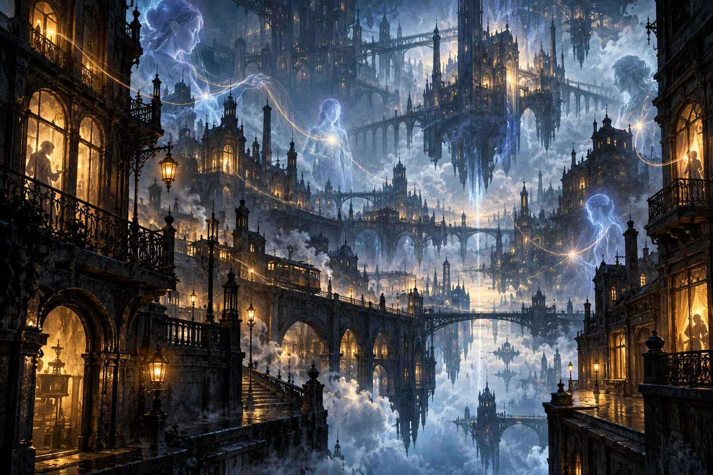

Una mappa con tre coordinate
Un luogo si descrive con posizione materiale, relazioni spirituali e rapporti esperienziali. Una camera ha dimensioni e indirizzo; può avere un legame spirituale con una reliquia e una corrispondenza con il sogno del suo abitante. Queste coordinate possono divergere. Spostare la reliquia modifica il legame senza trasportare il pavimento. Svegliare l'abitante chiude un sogno senza demolire la camera.
Il mondo corporeo, The Veil e The Reverie sono ambienti comunicanti. The Depth è il fondamento dei loro esercizi soprannaturali: non un oceano fisico sotto il pianeta. Le otto Roots sono configurazioni di The Depth; le loro manifestazioni possono occupare gli altri ambienti. Non aggiungiamo otto universi completamente separati dove ogni Root diventa un continente.
Le regioni qui catalogate sono tipi cosmologici ricorrenti, non coordinate di siti già localizzati. Alexander può conoscerne natura e pericoli senza conoscere ogni esemplare oggi esistente. Le future pagine geografiche identificheranno gli esemplari con nomi, coordinate e storia.
REG-01 — Il mondo corporeo
Natura: spazio materiale continuo, con corpi, campi e processi reali. Pianeti, stelle, vuoto e ambienti abitabili ne fanno parte. L'ambiente industriale dell'opera appartiene a un pianeta, non a una proiezione inconsistente. Numero, nomi e geografia dei suoi continenti sono lavoro del punto 8.
Organizzazione: distanza misurabile, successione ordinaria degli eventi, inerzia e scambi materiali. Gli interventi soprannaturali modificano fenomeni raggiunti: una gravità investita può divergere dal regime locale, ma non rende tutto il cosmo dipendente dal dio presente.
Accesso e comunicazione: spostamento ordinario oppure capacità effettive di viaggio. Un messaggio luminoso percorre la via fisica disponibile; un messaggio spirituale richiede il canale pertinente. Una luce visibile nel cielo non prova un contatto personale con il suo autore.
Conseguenze: macchine e persone ordinarie continuano a operare. Un incidente investito può lasciare rottami, feriti, trasformazioni indipendenti e canali ancora mantenuti: questi esiti vanno separati. Il vuoto resta pericoloso per chi ha solo una capacità di passaggio; attraversarlo non conferisce respirazione, isolamento termico o difesa dalle radiazioni.
REG-02 — Near Veil
Natura: regioni di The Veil con corrispondenze spirituali dense verso luoghi, persone e opere corporee. “Near” indica la forza di queste corrispondenze, non pochi metri sopra le strade.
Organizzazione: un complesso ospedaliero può produrre nodi distinti attraverso pazienti, strumenti investiti e morti recenti. I legami non costituiscono una registrazione automatica delle conversazioni. Un'area materiale abbandonata può restare spiritualmente intensa finché persistono investimenti reali.
Orientamento: riconoscere un accesso d'origine, seguire un legame identificato, controllare un riferimento indipendente d'arrivo. Un simbolo familiare è solo un indizio finché non si verifica la connessione. La somiglianza percettiva con la città non certifica la sua geometria.
Interazione: un'apparizione spirituale non è materialmente colpita da ogni pallottola e non può automaticamente sollevare ogni tavolo. Servono presenza corporeamente efficace, investimento o tecnica di trasmissione. Un Medium lasciato in camera può permettere il colloquio attraverso quel canale e niente oltre.
Pericolo e uso: intrusioni su legami già aperti, smarrimento dell'accesso di ritorno, esposizione spirituale. È utile per comunicazioni, diagnosi e passaggi pertinenti; non una rete gratuita per qualunque Bearer. Causa: corrispondenze effettive con il corporeo. Conseguenza: attività spirituale localmente intensa. Collegamento: REG-01 e REG-03.
REG-03 — Confluence Belts
Natura: regioni del Veil dove diversi collegamenti persistenti si incrociano. Possono unire luoghi materialmente remoti senza abolire la distanza materiale tra essi.
Organizzazione: nodi e corridoi, con ingressi, destinazioni, capacità di transito e investimento. Una rete di tre reliquie può avere due itinerari indipendenti; perdere uno non cancella necessariamente l'altro. Una presenza può contendere un nodo senza possedere l'intera regione.
Accesso: seguire o costruire un collegamento consentito dalla propria tecnica. Se il corridoio sostiene soltanto informazione, il viaggiatore non può infilarvi il proprio corpo. Se trasferisce spirito, il corpo lasciato indietro resta un oggetto esposto nel mondo corporeo.
Distanza: il costo operativo dipende da profondità, complessità e stabilità del collegamento; non si ricava moltiplicando chilometri per un fattore universale. Il tempo di percorso va dichiarato per il corridoio effettivo prima della decisione. Un percorso temporaneo può essere rapido e capiente oppure lento e fragile secondo il suo investimento.
Pericolo: transiti convergenti, sostituzione dell'uscita, drenaggio lungo il percorso. Funzione: commerci spirituali, reti di osservazione, migrazione di presenze, contesa dei passaggi. Cause: legami persistenti. Conseguenze: concentrazione di accessi e interessi. Collegamenti: REG-02, REG-04 e le Roots manifestate.
REG-04 — Unmoored Reaches
Natura: regioni del Veil con poche corrispondenze corporee immediate. Non sono esterne al cosmo e non sono il regno di un dio unico.
Organizzazione: presenze e isole di investimento possono sostenere proprie relazioni. Le immagini percepite traducono rapporti spirituali: una distesa di torri non prova che esista pietra utilizzabile. Una potenza può costruirvi un habitat investito materialmente interagibile; allora la sua consistenza dipende dalla configurazione dichiarata.
Accesso e ritorno: un ingresso profondo deve conservare un Anchor oppure una via alternativa realmente posseduta. La perdita del riferimento non forza una morte istantanea: può isolare, ridurre le comunicazioni o impedire una ricollocazione corporea. Anche una divinità deve trovare o costruire un arrivo valido.
Uso e rischio: isolamento di laboratori, rifugi spirituali e approcci remoti. Senza un investimento idoneo un umano non acquisisce automaticamente sopravvivenza extra-corporea. L'assenza di testimoni ordinari non garantisce assenza di presenze. Collegamento verticale: corrispondenze rare; conseguenza: navigazione meno ancorata; collegamento orizzontale: Confluence Belts.
REG-05 — Private Reveries
Natura: domini di esperienza sostenuti da una persona: sogni, architetture interiori investite, configurazioni percettive. Non ogni immagine mentale costituisce un dominio accessibile.
Organizzazione: elementi secondo la struttura del soggetto e gli investimenti presenti. Una porta può organizzare il rapporto con un ricordo senza essere un collegamento materiale verso il luogo ricordato. Il soggetto può non conoscere la propria topologia, e l'intruso può fraintenderla.
Accesso: una capacità pertinente, una connessione autentica e una contesa delle difese. Leggere una lettera non permette di invadere gratuitamente chi l'ha scritta. Il consenso può aprire un ingresso, ma non conferisce la capacità di mantenerlo.
Effetti: lesioni, comandi e modifiche interne hanno le conseguenze effettivamente esercitate. Uccidere una figura onirica non uccide automaticamente il sognatore. Una figura che sostiene realmente un compartimento investito può invece esserne un bersaglio operativo. Svegliarsi può sciogliere un sogno ordinario; non annulla per definizione un'intrusione mantenuta da un pari.
Collegamenti: Labyrinth governa architetture interiori; Mask rappresentazioni e riconoscimento; Scroll volontà e linguaggio. Queste specializzazioni non si fondono solo perché operano nello stesso dominio.
REG-06 — Common Reveries
Natura: domini esperienziali condivisi, sostenuti da rapporti reali tra partecipanti o da una configurazione investita. Non esiste un inconscio universale automaticamente leggibile contenente tutti i pensieri.
Organizzazione: una struttura comune più interfacce personali. Due ospiti possono percepire diversamente la stessa soglia senza che ogni contraddizione diventi vera nel corporeo. Le persone conservano centri distinti anche quando partecipano a un'esperienza simultanea.
Persistenza: un sogno comune occasionale può terminare con il risveglio; una città onirica mantenuta può restare attiva quando un singolo ospite esce. Un dominio autonomo dispone di una configurazione e riserva proprie dichiarate. La durata non si presume infinita.
Uso: incontro, formazione, rifugio interiore e prigionia. Rischio: contagio emotivo, controllo degli ingressi, estrazione di informazioni o danno attraverso il collegamento. Nessuna conversazione comune è per questo pubblica a tutto The Reverie.
Causa: connessioni interpersonali o investimento comune. Conseguenza: un teatro condiviso distinto dalle singole menti. Collegamento: Private Reveries e The Inner Vast. Gli abitanti non diventano proprietà del sostenitore.
REG-07 — Root Interfaces
Natura: zone degli ambienti precedenti nelle quali una Root manifesta un accesso stabile. Sono interfacce, non il luogo fisico dove sarebbe contenuta tutta la fonte.
Organizzazione: nucleo d'accesso, investimenti locali, confini e derivazioni. Possono manifestare le forme descritte nel catalogo delle fonti 69. Una manifestazione può essere mobile, corporea o interiore.
Conseguenze: amplificazione di esercizi compatibili, residui diagnostici e potenziale Backflow. Amplificazione non promozione: un visitatore I resta I anche se uno strumento VII gli presta un effetto. Attraversare una soglia d'interfaccia non concede tutte le Seats del gruppo.
Orientamento: la fonte può apparire come fornace, archivio o bocca. La forma evocativa non basta a identificarla; si verificano fenomeni, compatibilità e catena d'accesso. Simulazioni e contraffazioni sono possibili. Collegamento verticale: Root; orizzontale: altri ambienti e Threads incorporati.
Il cosmo oltre il pianeta
Non esiste una cupola universale che vieti ogni intervento esterno. L'isolamento deriva da distanza, assenza di accessi, schermature e contese. La navigazione materiale interplanetaria, un corridoio Astrolabe e una proiezione nel Veil sono metodi differenti; nessuno conferisce automaticamente piena capacità di combattimento all'arrivo.
La luce di una stella, un frammento meteoritico e un'antica emanazione sono indizi di provenienza con profondità differenti. La prima non è automaticamente una via di invasione; il secondo può portare una Pattern; la terza può essere ancora collegata a una persona. Il manuale 71 tratta queste distinzioni.
Un'area spirituale estesa non ha obbligatoriamente lo stesso volume della sua corrispondenza fisica. Un dominio cosmico può avere ingressi su più mondi mentre resta una struttura personale unica. “Fuori” indica provenienza o collocazione rispetto al teatro abitato, non una categoria di rango superiore agli Axials.
Scheda di cartografia obbligatoria
Per ogni esemplare futuro: ID; ambiente; corrispondenze; geometria pertinente; accessi di andata e ritorno; tipi trasferibili; investimento e titolare conosciuto; durata; condizioni d'esposizione; collegamenti alternativi; tracce; dati ignoti. Separare sempre osservazione, deduzione e leggenda.
Una mappa diventa utilizzabile quando consente di decidere come arrivare, che cosa portare, quali rischi affrontare e come uscire. Le descrizioni estetiche verranno illustrate al punto 14. Non costituiscono geometria verificata o nuovi poteri.
Topologia materiale delle Roots
Le otto sorgenti hanno interni fisicamente reali, anche quando l’accesso compare nel Veil o nella Reverie. La topologia propria non richiede un indirizzo ordinario sulla superficie di Avarenne. Questo non istituisce otto universi indipendenti: sono sorgenti singolari, con rapporti e soglie. Materia trasferita resta materia, mentre una immagine osservata non trasferisce corpi. Vedere catalogo 69.
Approfondimenti collegati
Ulteriori dettagli documentati
Descrizione
Sapere cosmologico condiviso: struttura del cosmo e diagnosi, non ubicazioni segrete contemporanee. Si applicano i fondamenti 26, le regole 35 e le progressioni. Nessuna regione attribuisce automaticamente una nuova capacità. ## Una mappa con tre coordinate Un luogo si descrive con posizione materiale, relazioni spirituali e rapporti esperienziali. Una camera ha dimensioni e indirizzo; può avere un legame spirituale con una reliquia e una corrispondenza con il sogno del suo abitante. Queste coordinate possono divergere. Spostare la reliquia modifica il legame senza trasportare il pavimento. Svegliare l'abitante chiude un sogno senza demolire la camera. Il mondo corporeo, The Veil e The Reverie sono ambienti comunicanti. The Depth è il fondamento dei loro esercizi soprannaturali: non un oceano fisico sotto il pianeta. Le otto Roots sono configurazioni di The Depth; le loro manifestazioni possono occupare gli altri ambienti. Non aggiungiamo otto universi completamente separati dove ogni Root diventa un continente. Le regioni qui catalogate sono tipi cosmologici ricorrenti, non coordinate di siti già localizzati. Alexander può conoscerne natura e pericoli senza conoscere ogni esemplare oggi esistente. Le future pagine geografiche identificheranno gli esemplari con nomi, coordinate e storia. ## REG-01 — Il mondo corporeo Natura: spazio materiale continuo, con corpi, campi e processi reali. Pianeti, stelle, vuoto e ambienti abitabili ne fanno parte. L'ambiente industriale dell'opera appartiene a un pianeta, non a una proiezione inconsistente. Numero, nomi e geografia dei suoi continenti sono lavoro del punto 8. Organizzazione: distanza misurabile, successione ordinaria degli eventi, inerzia e scambi materiali. Gli interventi soprannaturali modificano fenomeni raggiunti: una gravità investita può divergere dal regime locale, ma non rende tutto il cosmo dipendente dal dio presente. Accesso e comunicazione: spostamento ordinario oppure capacità effettive di viaggio. Un messaggio luminoso percorre la via fisica disponibile; un messaggio spirituale richiede il canale pertinente. Una luce visibile nel cielo non prova un contatto personale con il suo autore. Conseguenze: macchine e persone ordinarie continuano a operare. Un incidente investito può lasciare rottami, feriti, trasformazioni indipendenti e canali ancora mantenuti: questi esiti vanno separati. Il vuoto resta pericoloso per chi ha solo una capacità di passaggio; attraversarlo non conferisce respirazione, isolamento termico o difesa dalle radiazioni. ## REG-02 — Near Veil Natura: regioni di The Veil con corrispondenze spirituali dense verso luoghi, persone e opere corporee. “Near” indica la forza di queste corrispondenze, non pochi metri sopra le strade. Organizzazione: un complesso ospedaliero può produrre nodi distinti attraverso pazienti, strumenti investiti e morti recenti. I legami non costituiscono una registrazione automatica delle conversazioni. Un'area materiale abbandonata può restare spiritualmente intensa finché persistono investimenti reali. Orientamento: riconoscere un accesso d'origine, seguire un legame identificato, controllare un riferimento indipendente d'arrivo. Un simbolo familiare è solo un indizio finché non si verifica la connessione. La somiglianza percettiva con la città non certifica la sua geometria. Interazione: un'apparizione spirituale non è materialmente colpita da ogni pallottola e non può automaticamente sollevare ogni tavolo. Servono presenza corporeamente efficace, investimento o tecnica di trasmissione. Un Medium lasciato in camera può permettere il colloquio attraverso quel canale e niente oltre. Pericolo e uso: intrusioni su legami già aperti, smarrimento dell'accesso di ritorno, esposizione spirituale. È utile per comunicazioni, diagnosi e passaggi pertinenti; non una rete gratuita per qualunque Bearer. Causa: corrispondenze effettive con il corporeo. Conseguenza: attività spirituale localmente intensa. Collegamento: REG-01 e REG-03. ## REG-03 — Confluence Belts Natura: regioni del Veil dove diversi collegamenti persistenti si incrociano. Possono unire luoghi materialmente remoti senza abolire la distanza materiale tra essi. Organizzazione: nodi e corridoi, con ingressi, destinazioni, capacità di transito e investimento. Una rete di tre reliquie può avere due itinerari indipendenti; perdere uno non cancella necessariamente l'altro. Una presenza può contendere un nodo senza possedere l'intera regione. Accesso: seguire o costruire un collegamento consentito dalla propria tecnica. Se il corridoio sostiene soltanto informazione, il viaggiatore non può infilarvi il proprio corpo. Se trasferisce spirito, il corpo lasciato indietro resta un oggetto esposto nel mondo corporeo. Distanza: il costo operativo dipende da profondità, complessità e stabilità del collegamento; non si ricava moltiplicando chilometri per un fattore universale. Il tempo di percorso va dichiarato per il corridoio effettivo prima della decisione. Un percorso temporaneo può essere rapido e capiente oppure lento e fragile secondo il suo investimento. Pericolo: transiti convergenti, sostituzione dell'uscita, drenaggio lungo il percorso. Funzione: commerci spirituali, reti di osservazione, migrazione di presenze, contesa dei passaggi. Cause: legami persistenti. Conseguenze: concentrazione di accessi e interessi. Collegamenti: REG-02, REG-04 e le Roots manifestate. ## REG-04 — Unmoored Reaches Natura: regioni del Veil con poche corrispondenze corporee immediate. Non sono esterne al cosmo e non sono il regno di un dio unico. Organizzazione: presenze e isole di investimento possono sostenere proprie relazioni. Le immagini percepite traducono rapporti spirituali: una distesa di torri non prova che esista pietra utilizzabile. Una potenza può costruirvi un habitat investito materialmente interagibile; allora la sua consistenza dipende dalla configurazione dichiarata. Accesso e ritorno: un ingresso profondo deve conservare un Anchor oppure una via alternativa realmente posseduta. La perdita del riferimento non forza una morte istantanea: può isolare, ridurre le comunicazioni o impedire una ricollocazione corporea. Anche una divinità deve trovare o costruire un arrivo valido. Uso e rischio: isolamento di laboratori, rifugi spirituali e approcci remoti. Senza un investimento idoneo un umano non acquisisce automaticamente sopravvivenza extra-corporea. L'assenza di testimoni ordinari non garantisce assenza di presenze. Collegamento verticale: corrispondenze rare; conseguenza: navigazione meno ancorata; collegamento orizzontale: Confluence Belts. ## REG-05 — Private Reveries Natura: domini di esperienza sostenuti da una persona: sogni, architetture interiori investite, configurazioni percettive. Non ogni immagine mentale costituisce un dominio accessibile. Organizzazione: elementi secondo la struttura del soggetto e gli investimenti presenti. Una porta può organizzare il rapporto con un ricordo senza essere un collegamento materiale verso il luogo ricordato. Il soggetto può non conoscere la propria topologia, e l'intruso può fraintenderla. Accesso: una capacità pertinente, una connessione autentica e una contesa delle difese. Leggere una lettera non permette di invadere gratuitamente chi l'ha scritta. Il consenso può aprire un ingresso, ma non conferisce la capacità di mantenerlo. Effetti: lesioni, comandi e modifiche interne hanno le conseguenze effettivamente esercitate. Uccidere una figura onirica non uccide automaticamente il sognatore. Una figura che sostiene realmente un compartimento investito può invece esserne un bersaglio operativo. Svegliarsi può sciogliere un sogno ordinario; non annulla per definizione un'intrusione mantenuta da un pari. Collegamenti: Labyrinth governa architetture interiori; Mask rappresentazioni e riconoscimento; Scroll volontà e linguaggio. Queste specializzazioni non si fondono solo perché operano nello stesso dominio. ## REG-06 — Common Reveries Natura: domini esperienziali condivisi, sostenuti da rapporti reali tra partecipanti o da una configurazione investita. Non esiste un inconscio universale automaticamente leggibile contenente tutti i pensieri. Organizzazione: una struttura comune più interfacce personali. Due ospiti possono percepire diversamente la stessa soglia senza che ogni contraddizione diventi vera nel corporeo. Le persone conservano centri distinti anche quando partecipano a un'esperienza simultanea. Persistenza: un sogno comune occasionale può terminare con il risveglio; una città onirica mantenuta può restare attiva quando un singolo ospite esce. Un dominio autonomo dispone di una configurazione e riserva proprie dichiarate. La durata non si presume infinita. Uso: incontro, formazione, rifugio interiore e prigionia. Rischio: contagio emotivo, controllo degli ingressi, estrazione di informazioni o danno attraverso il collegamento. Nessuna conversazione comune è per questo pubblica a tutto The Reverie. Causa: connessioni interpersonali o investimento comune. Conseguenza: un teatro condiviso distinto dalle singole menti. Collegamento: Private Reveries e The Inner Vast. Gli abitanti non diventano proprietà del sostenitore. ## REG-07 — Root Interfaces Natura: zone degli ambienti precedenti nelle quali una Root manifesta un accesso stabile. Sono interfacce, non il luogo fisico dove sarebbe contenuta tutta la fonte. Organizzazione: nucleo d'accesso, investimenti locali, confini e derivazioni. Possono manifestare le forme descritte nel catalogo delle fonti 69. Una manifestazione può essere mobile, corporea o interiore. Conseguenze: amplificazione di esercizi compatibili, residui diagnostici e potenziale Backflow. Amplificazione non promozione: un visitatore I resta I anche se uno strumento VII gli presta un effetto. Attraversare una soglia d'interfaccia non concede tutte le Seats del gruppo. Orientamento: la fonte può apparire come fornace, archivio o bocca. La forma evocativa non basta a identificarla; si verificano fenomeni, compatibilità e catena d'accesso. Simulazioni e contraffazioni sono possibili. Collegamento verticale: Root; orizzontale: altri ambienti e Threads incorporati. ## Il cosmo oltre il pianeta Non esiste una cupola universale che vieti ogni intervento esterno. L'isolamento deriva da distanza, assenza di accessi, schermature e contese. La navigazione materiale interplanetaria, un corridoio Astrolabe e una proiezione nel Veil sono metodi differenti; nessuno conferisce automaticamente piena capacità di combattimento all'arrivo. La luce di una stella, un frammento meteoritico e un'antica emanazione sono indizi di provenienza con profondità differenti. La prima non è automaticamente una via di invasione; il secondo può portare una Pattern; la terza può essere ancora collegata a una persona. Il manuale 71 tratta queste distinzioni. Un'area spirituale estesa non ha obbligatoriamente lo stesso volume della sua corrispondenza fisica. Un dominio cosmico può avere ingressi su più mondi mentre resta una struttura personale unica. “Fuori” indica provenienza o collocazione rispetto al teatro abitato, non una categoria di rango superiore agli Axials. ## Scheda di cartografia obbligatoria Per ogni esemplare futuro: ID; ambiente; corrispondenze; geometria pertinente; accessi di andata e ritorno; tipi trasferibili; investimento e titolare conosciuto; durata; condizioni d'esposizione; collegamenti alternativi; tracce; dati ignoti. Separare sempre osservazione, deduzione e leggenda. Una mappa diventa utilizzabile quando consente di decidere come arrivare, che cosa portare, quali rischi affrontare e come uscire. Le descrizioni estetiche verranno illustrate al punto 14. Non costituiscono geometria verificata o nuovi poteri. ## Topologia materiale delle Roots Le otto sorgenti hanno interni fisicamente reali, anche quando l’accesso compare nel Veil o nella Reverie. La topologia propria non richiede un indirizzo ordinario sulla superficie di Avarenne. Questo non istituisce otto universi indipendenti: sono sorgenti singolari, con rapporti e soglie. Materia trasferita resta materia, mentre una immagine osservata non trasferisce corpi. Vedere catalogo 69.